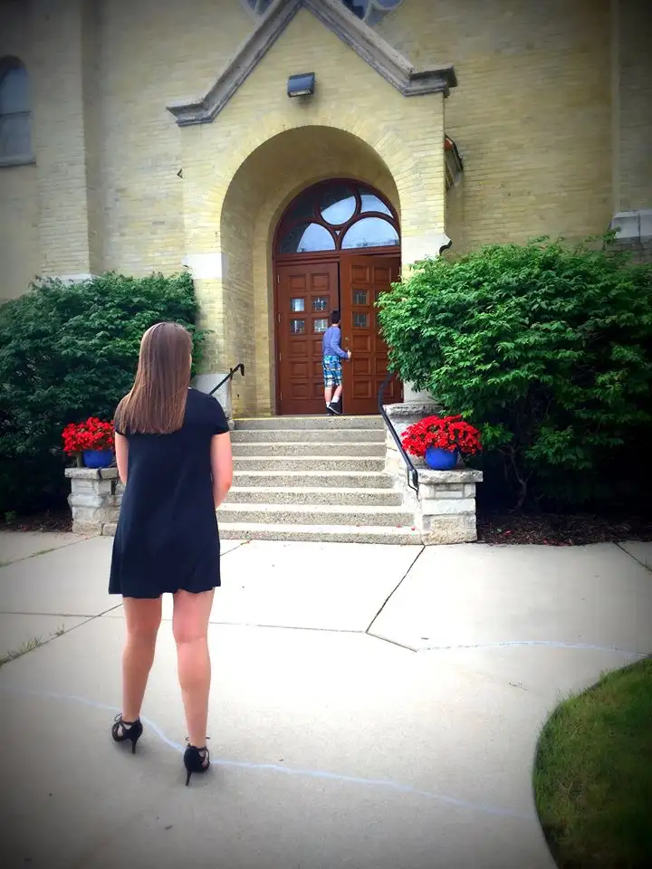
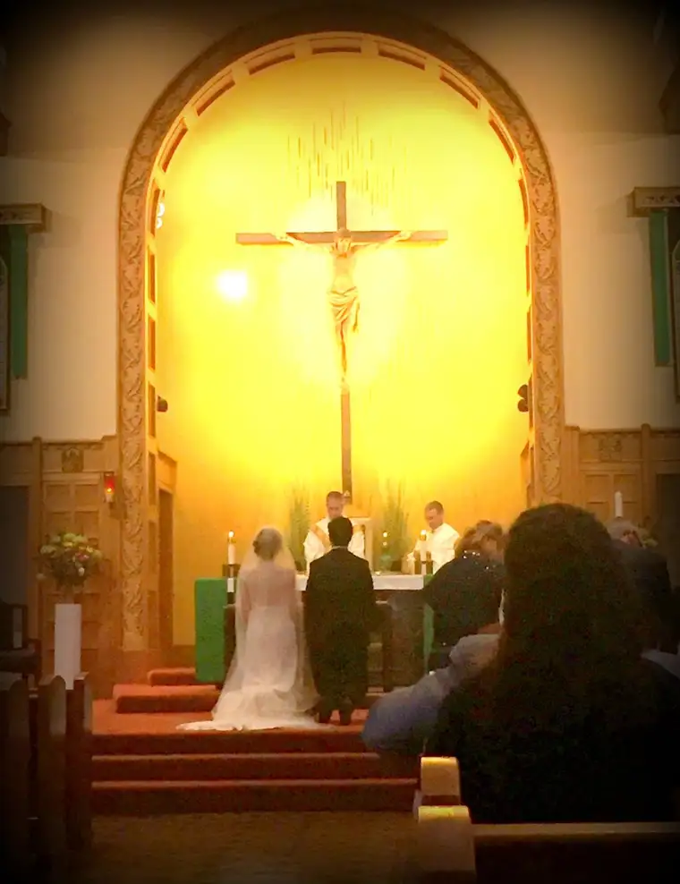
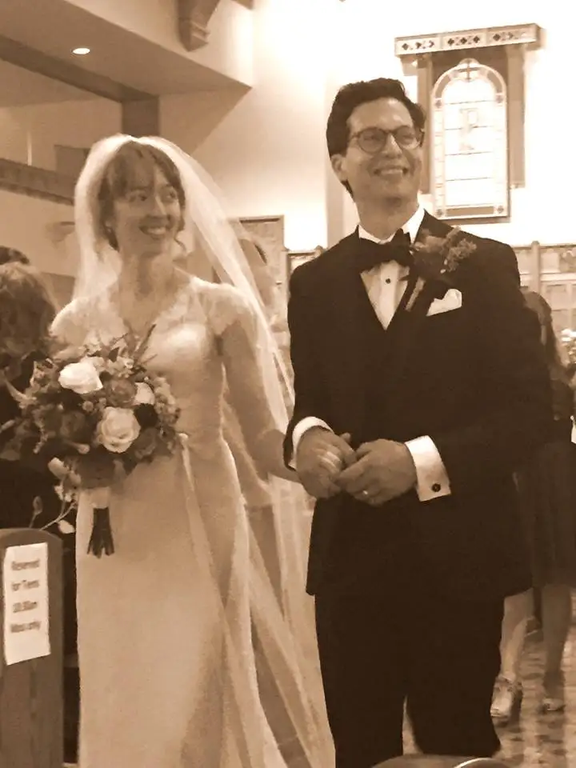
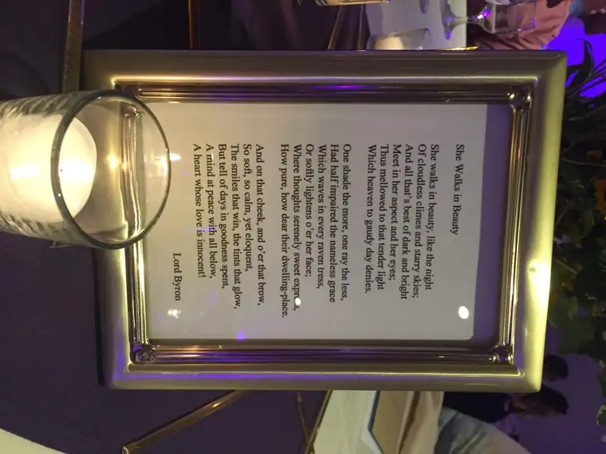
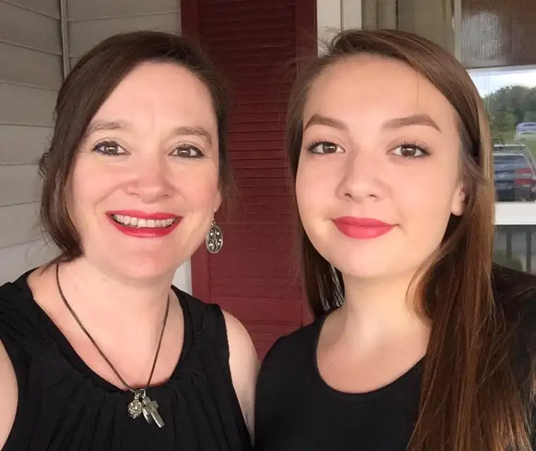
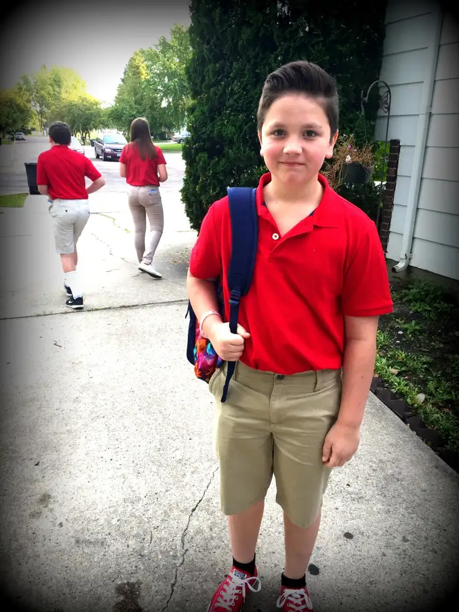
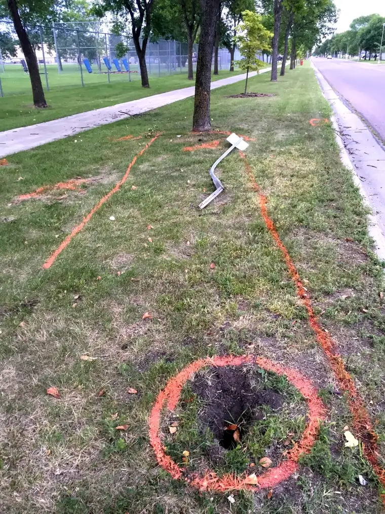
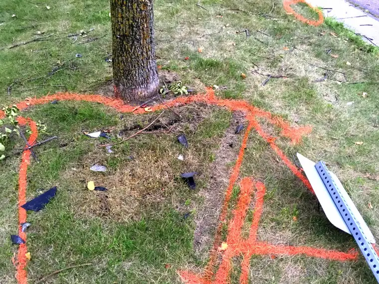
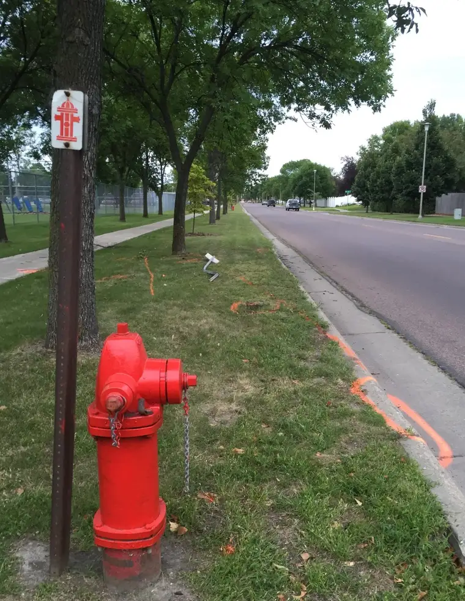

Our summer came to a crashing halt this year. Pretty literally actually.
Here’s a quick flash of what was going on at the height of it all.
First, let me assure my faithful readers who are not yet in the know of the details: No one in our family was hurt. But I witnessed this moment — the actual moment of impact before the emergency personnel showed up (I made the 9-1-1 call that summoned them actually). It was surreal.
But what made it even more of an out-of-body experience was what happened before this moment.
First, some positives. We delayed our summer vacation this year to attend the wedding of my friend Christina, a 20-something, fellow Catholic writer who embarked on a literary adventure to Georgia two summers ago with me and another friend, to the home of famed (now deceased) Southern novelist Flannery O’Connor. Since the wedding would take place in eastern Wisconsin, we timed our trip to the Wisconsin Dells around the Aug. 20 event.
The day of the wedding turned out so beautiful…



Oh, and you have to see this. Christina is a ballroom dance instructor, and one of her students, her groom, did a fabulous job of making their first dance truly memorable.
Watch my little video of that dance here.
Water parks are fun, but this was definitely my favorite part of our trip — seeing new lives unfold and also, just being with our family away from the grind for a few days.


Then, two days after our arrival home, this happened.

I wasn’t sure I was ready. At all. I wasn’t. How could summer be over already?
But then this happened — our school’s opening Mass.

It brought everything in right order seeing that sea of red uniform shirts once again, and hearing the prayers, blessing and song of the Christian community coming together before embarking on another year of learning; learning about not only the mind, but the soul as well. It never fails to hearten me to be around that energy and hope.
That was on Tuesday. That evening I felt exceedingly tired at bedtime, but just figured it was lack of sleep and the start of a new school year. However, in the middle of the night I woke with a screaming bad sort throat. It wasn’t the usual kind of allergies thing, and I heard strep was going around. Someone advised that it was probably allergies, however, so I waited it out the day Wednesday. Well, by Thursday I was a wreck and knew I needed to be seen as soon as possible. I couldn’t even swallow spit comfortably. So, I summoned all my courage and slowly made my way out of our house with the intention of getting myself into the safe care of a physician. I felt out of it, but had to push myself into my van and out of the cul-de-sac toward the road. It wouldn’t be too long of a drive. I could do this. Just five minutes and I’d be there.

Except…when I reached the end of our cul-de-sac and paused at the stop sign to merge onto oncoming traffic, everything got really strange. I may have heard a boom — other witnesses reported hearing a sound. But it happened so fast I couldn’t process all my memories — not audio anyway. Sight, that was as clear as it could be. I saw movement across the street from where my van was sitting in wait, and it was the sight of a car ramming into a tree! What? I mean, the wheels were still spinning at the moment my eyes met this crazy moment in time. I didn’t know what to make of it. And I sensed I might be the only one seeing it. I panicked a little, knowing I wasn’t well anyway, and then how does one react? Obviously I had to stop and assess.



Thankfully, another vehicle had been behind the car, had seen it swerving, had witnessed the whole thing. He pulled over his larger rig and ran out and across the street to see what had happened. My first thought was that someone had had a stroke or heart attack or seizure, because it didn’t make sense. The car was on the wrong side of the street — well actually now on the sidewalk beyond the road — and had rammed into a tree, which was standing perfectly still. What? And were there people injured?
What was odd is I didn’t see a lot of movement, which was scary. I’m the least qualified person to be dealing with medical emergencies. Trust me. It’s just not my thing….at all. But I DID have my cell phone in my hand, and the man who’d jumped out of the truck saw me and summoned me to call 9-1-1, which I was already thinking I should do. I was not in collected form at ALL, but did my best to relay what I was seeing and to urgently request help based on the frantic movements of the man from the truck, who said to “Hurry!” It was scary knowing a life might be in my hands.
And remember, I’m still a wreck myself from being sick. I definitely was not a star witness, but I was there, for whatever reason, and later, was able to offer some crucial information to the police.
I honestly don’t know what happened. Another neighbor who followed and was trying to help the victims reported the smell of alcohol. That’s a frightening prospect, and changes my initial perception that it was a freak medical thing that caused this. Though our kids had already been to school a few days, public schools had started that very morning. And we live just blocks from both an elementary and high school. Which makes the skin crawl. The time was around 10 a.m., but had it been an hour earlier? Had the kids been out and about…this scene might have been even more horrific.

For that matter, it could have been my kids, had one of the older ones been home on a work break. It could have been my husband, who had just come home for a quick errand minutes before. And actually, quite possibly, had I not lingered a moment to chat with him, had I emerged from the driveway even a few minutes earlier, it could have been me caught in the swerve of a car that seemed, perhaps, on the run, and with drivers who may not have been wholly “here” to begin with.
I was still in agony, but now, my heart was heavy too as I entered the clinic. The diagnosis was clear: strep plus inflamed tonsils. No wonder I was in such pain. But at least I could begin now to recover. I truly felt every ounce of gratitude one might feel that we have such good medical care here, and that I was able, relatively easily, to get the meds I needed to begin to mend.
That was Thursday. By Saturday, I was doing better. Not 100 percent, but good enough to go with my husband to retrieve my van, which was in the shop for a recall. Still a little weak and hoping for a quick trip there and home again, I wasn’t anywhere ready to be caught in a torrential rainstorm that included a five-minute spattering of dime-sized hail.
I won’t go into all the details on that one, but in looking back now, I have to chuckle a little, because it definitely seemed like I was being summoned to stop, to just be, to lay in bed and suffer it out. Because every time I ventured out, I was truly taking my life into my own hands!
“Stop!” God said. “Just stop.” I had no choice. I had nothing to do really but pray, and that I did, to the best of my ability.
And now, I’m pulling out of that crazy week, and life feels so much more even again, so much more hopeful. It was a rough beginning to the school year but I think I’ve collected enough obstacles in one week to getting back into life to last until Thanksgiving at least.
Sunday, our oldest daughter started college. There’s a whole world waiting, and now that I’m past the strep and the crash and the hailstorm that threw its fury on an unsuspecting car on the way to the service center…I’m ready to embrace what God has in mind next.
Apparently I needed to purge a little. Apparently I needed to abandon myself to him. Apparently I needed to be reminded that He’s in control, and if I keep that always in the fore, all will be well.
Q4U: When did God tell you to STOP?